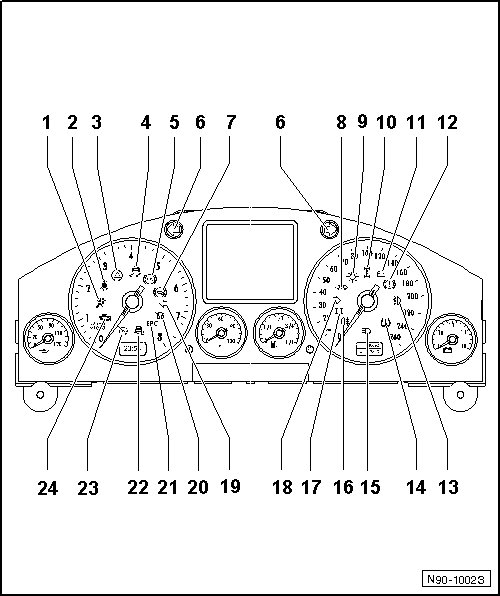

Instrument Cluster Indicator Lamp Symbols, through 11.06
Instrument Cluster Indicator Lamp Symbols, through 11.06
• Applicability and layout of instrument cluster warning and indicator lamps are market and engine dependent.
• Different instrument clusters are used, depending on vehicle equipment. Some lamps illustrated here may not apply to US/CDN models.

1 - Airbag or seatbelt tensioner system
2 - Seat Belts
3 - Electronic Stability Program (ESP)
4 - ESP-system lamp (ASR/ESC)
5 - Anti-lock braking system (ABS)
6 - Left/right turn signal indicator (turn signal/emergency flasher system)
7 - Rear fog lamps
8 - Trailer turn signals
9 - Lamp failure
10 - Offroad
11 - Generator load control
12 - Brake indicator/Parking brake indicator
13 - Fog Lamps
14 - Tire pressure monitoring indicator
15 - High beam headlamp
16 - Rear fog lamps
17 - Shift lock
• Warning lamp only present in vehicles with automatic transmission
18 - Right turn signal indicator (turn signal/emergency flasher system)
19 - Left turn signal indicator (turn signal/emergency flasher system)
20 - Glow Plug System
• Indicator lamp only present in vehicles with diesel engine
21 - Electronic power control (EPC)
• Indicator lamp only present in vehicles with gasoline engine
22 - Decoupled Offroad Stabilizer
23 - Cruise Control System
24 - Malfunction Indicator Lamp (MIL)